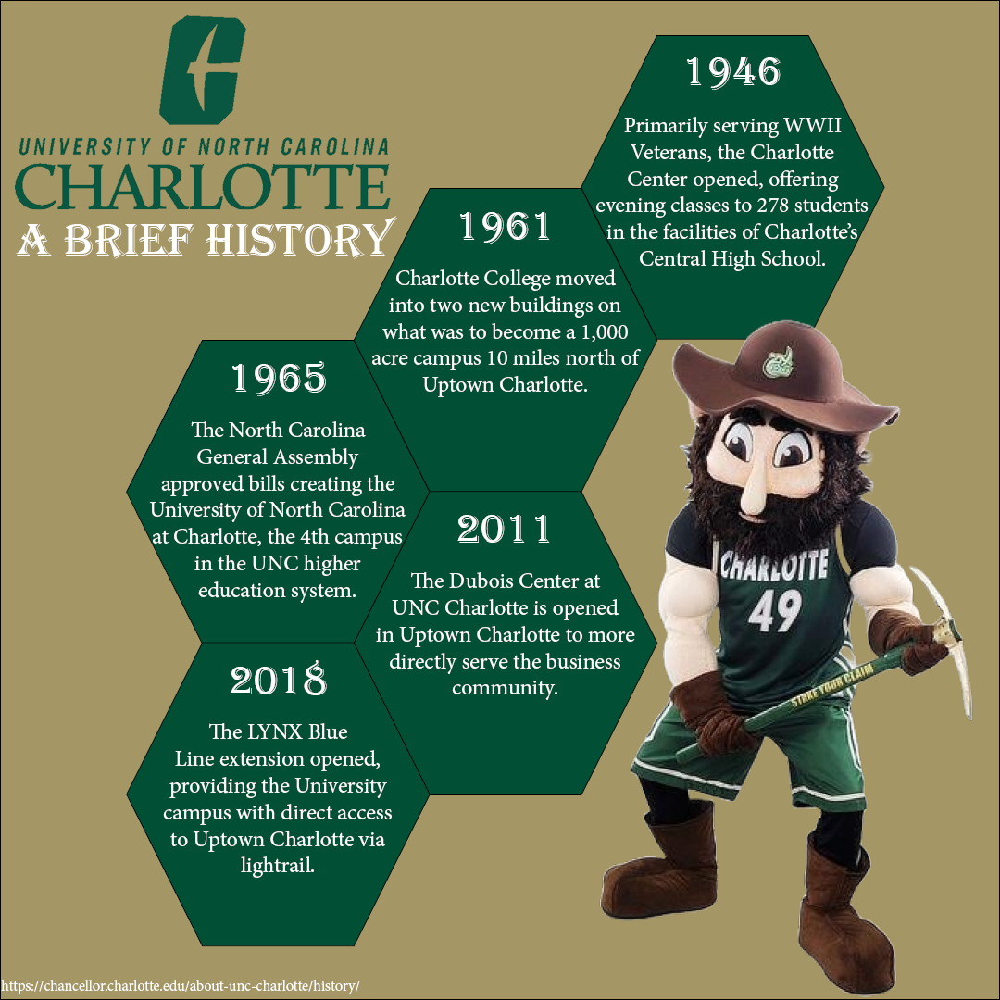
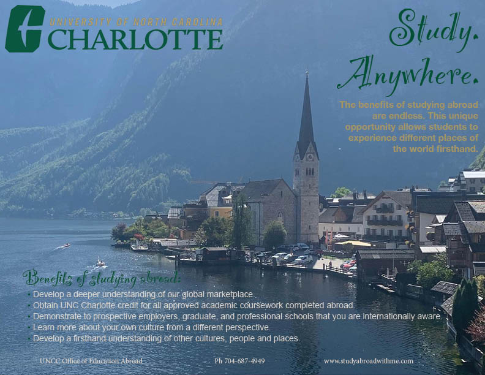
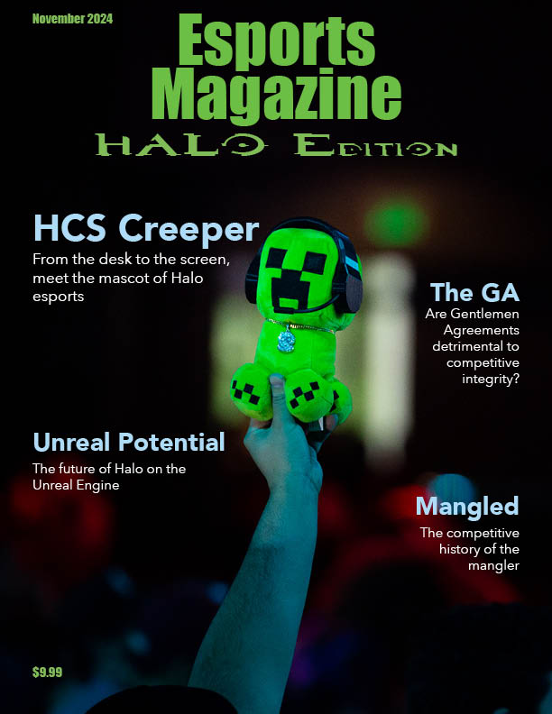
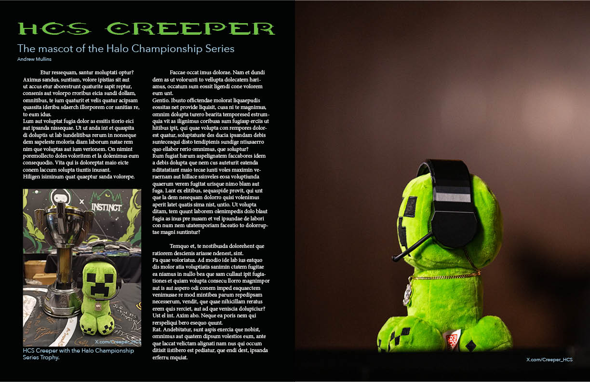

I’m a Charlotte-based communications professional and December 2025 graduate of UNC Charlotte, where I earned a B.A. in Communication Studies with a concentration in Media & Technology and a Certificate in Video Production.
My background spans media production, print design, program coordination, and social media management. I bring a combination of creative and operational skills to communications work: comfortable moving between producing original content, coordinating logistics across stakeholders, and engaging directly with audiences and customers.
I’m currently seeking opportunities in communications, content, media production, or related fields in the Charlotte area, and I bring hands-on experience across each of those disciplines.
Truer Crime
Video podcast, 2025. Senior thesis at UNC Charlotte.
A fictional true crime video podcast that follows a seemingly grounded narrative until it gradually unravels into something impossible. As sole producer, I was responsible for concept development, scripting, filming, editing, and delivery, completing the full production cycle in approximately four months. The project required significant independent decision-making under time constraints and demonstrated end-to-end production capability.
HCS Creeper originated at the 2021 Halo Infinite Kickoff Major in Raleigh, NC, where a spontaneous moment during a live esports broadcast generated significant audience engagement online. Recognizing an opportunity, I created and managed a multi-platform social media presence across Twitter (now X), Instagram, and TikTok, growing the account to 4,000+ followers at peak through consistent, platform-native content creation and community engagement. The account’s growth reflects an ability to identify audience interest, develop a content voice, and build an engaged following from the ground up.
The Only Fan
Short horror film, 2025. UNC Charlotte Video Production program.
A narrative short horror film that I co-directed and edited. Working with a crew of five, I managed creative direction, on-set coordination, and post-production editing from pre-production through a formal class screening.
Graphic design in Adobe InDesign
Print design, 2024. Media & Technology coursework.
A collection of print design work including a university history infographic, a study abroad promotional flyer, and a magazine cover and interior spread. Each piece was developed with an emphasis on layout, typography, and visual hierarchy as tools for clear and intentional communication.




Skills
Tools and software
Adobe InDesign, Adobe Premiere Pro, Google Workspace, Canva, Instagram and X scheduling tools, AI tools (Claude, ChatGPT, Midjourney)
Core competencies
Written and verbal communication, content planning and creation, media production, project coordination, team leadership, customer engagement
Contact
I am actively seeking communications, content, media, or related opportunities in the Charlotte area. I welcome inquiries from hiring managers, recruiters, and collaborators.